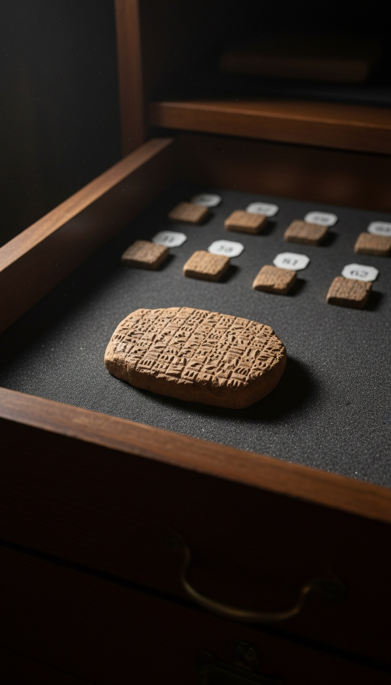

A prophet in Jerusalem and a temple clerk in Babylon wrote down the same man's name, and the clerk's copy sat in the British Museum for 87 years before anyone read it.
The man is Nebo-Sarsekim. The Book of Jeremiah puts him inside the conquered city in 587 BC, seated in judgment at its gate. A cuneiform tablet catalogued as BM 114789 puts him in Babylon nine years earlier, handing over gold to the god Marduk. Two scribes, two languages and two cities record one officer. The second witness was in London the whole time.

The Man in the Middle Gate
Jeremiah 39 records the day Jerusalem broke. The wall was breached in the eleventh year of King Zedekiah, in the fourth month, on the ninth day. Babylon's army poured in, and the generals of Nebuchadnezzar II took their seats in the Middle Gate to rule over the ruins.
Verse three lists them by name: Nergal-sharezer, Samgar, Nebo-Sarsekim the Rabsaris, Nergal-sharezer the Rabmag, and "all the rest of the princes of the king of Babylon." The Rabsaris was the chief officer of the royal court. In Babylonian administration this was the rab sha-reshi, the chief eunuch, one of the highest men in the empire.
For roughly 2,600 years, that list stood as a prophet's private record of the men who walked through his ruined city. Nebo-Sarsekim had no tomb, no statue and no inscription anywhere outside the Hebrew text. Generations of readers treated the verse as a list of names with nothing behind them.
A Receipt for a Mina and a Half of Gold
The tablet that changed that is about the size of a matchbox. It is baked clay, pressed with wedge-shaped cuneiform, and it entered the British Museum collection in 1920. Its museum number is BM 114789.
Its content is pure bookkeeping. It records that Nabu-sharrussu-ukin, the rab sha-reshi, delivered 1.5 minas of gold, roughly 0.75 kilograms, to Esagila, the great temple of Marduk in Babylon. The delivery went through a eunuch named Arad-Banitu, and two witnesses signed off on it.
The date line reads the eighteenth day of the eleventh month, year ten of Nebuchadnezzar, king of Babylon. That is 595 BC. The scribe who pressed it had no interest in Jerusalem, prophecy or history. He was logging a payment so nobody could steal it.
Michael Jursa Reads the Name
In July 2007, Michael Jursa, an Assyriologist at the University of Vienna, was working through Babylonian economic tablets in the British Museum's study rooms. He was hunting administrative records, the dull material that makes up the bulk of every cuneiform archive.
He read the name and stopped. Nabu-sharrussu-ukin, rab sha-reshi of Nebuchadnezzar. He recognised the Babylonian spelling of the Rabsaris from Jeremiah 39:3. The British Museum's Irving Finkel, curator of the cuneiform collection, called it "a fantastic discovery, a world-class find."
Jursa did no digging to find it. There was no trench, no expedition and no lost city. The proof came out of a drawer the museum had owned since the year after the First World War ended.
A prophet's list of conquerors and a Babylonian gold receipt name the same man, and the receipt was written nine years before Jerusalem burned.
Same Name, Same Title, Same King
The match stacks three ways. The name is the same: Nebo-Sarsekim in Hebrew, Nabu-sharrussu-ukin in Akkadian. The title is the same: Rabsaris in Jeremiah, rab sha-reshi on the tablet. The king is the same: Nebuchadnezzar II in both texts.
The timing locks it in. The tablet places him in office in 595 BC. Jeremiah places him at Jerusalem's gate in 587 BC. A chief eunuch serving the same king for a decade is exactly how a Babylonian court career ran. The man who handed gold to Marduk's temple was the man who later sat over a conquered Judah.
Critics reach for one move: a common name, a different man. That falls apart on the title. The rab sha-reshi was a single office at the top of the court, held by one man at a time and sitting next to the king. Two different men did not carry that name and that title under the same king in the same decade. The receipt and the prophet point at one officer, and both scribes knew exactly who he was.
The Verse Holds More Than One Officer
Nebo-Sarsekim is the second name in Jeremiah 39:3 to surface in Babylon's own records. The first name on the list, Nergal-sharezer, is Nergal-sharra-usur, the Babylonian general known to history as Neriglissar. He married into Nebuchadnezzar's family and seized the throne of Babylon in 560 BC. His building inscriptions survive in Babylonian clay.
The pattern runs further. Ernst Weidner published ration tablets from Nebuchadnezzar's palace in Babylon in 1939, excavated by Robert Koldewey's German expedition and held today in Berlin's Vorderasiatisches Museum. They list oil rations for "Ya'ukin, king of the land of Yahud." That is Jehoiachin, the captive king of Judah from 2 Kings 25, eating at the Babylonian king's expense exactly as the Bible says.
Three records, three museums, one story. The Lachish letters in the British Museum preserve Judah's last army officers writing as Babylon closed in. The Weidner tablets in Berlin feed the captive king. BM 114789 pays Marduk's temple through the officer who sat in Jerusalem's gate. Every new reading of Babylon's paperwork pulls the Book of Jeremiah closer to the clerk's desk.
The Drawers Nobody Has Opened
The British Museum holds around 130,000 cuneiform tablets and fragments, one of the largest collections on earth. Tens of thousands of them remain unpublished. They sit in boxes and cabinets, catalogued by number and read by no living scholar.
Most were shipped to London in the late 1800s from sites like Sippar and Babylon, dug up fast and stored faster. Only a few hundred specialists in the world can read Neo-Babylonian administrative script fluently. The tablet naming Nebo-Sarsekim waited 87 years for one of them to pull the right box.
Every one of those unread tablets is a receipt, a ration list, a court record or a letter written by the same bureaucracy that ran Jerusalem's conquest. The officers named in Jeremiah, Kings, Daniel and Ezra drew rations, signed contracts and paid temples. Their paperwork is in those boxes right now.
Jursa found Nebo-Sarsekim by reading one small receipt that nobody had read before. He went looking for tax records and found a man from the Book of Jeremiah standing in the ledger.
Daniel names Ashpenaz, the chief eunuch who took the young captives from Judah. Jeremiah names Nebuzaradan, captain of the guard, who burned the Temple. Ezra and Nehemiah name a dozen Persian officials. If one throwaway gold slip could prove a prophet's list of princes, which of those names is sitting in a London drawer tonight, and who decided not to read it yet?
Before you go
7 books the Vatican doesn't want you reading. Free PDF — the texts they cut, with sources. Joined by 300+ Inner Circle members.
No spam. Unsubscribe anytime.
Go deeper
The Hidden Canon, Vol. I — Enoch. Jubilees. Thomas. Mary. Judas. 90 pages, 14 chapters, every receipt cited. The books your Bible quietly removed.
Read the Canon →Books that informed this investigation
As an Amazon Associate, Hidden Epoch earns from qualifying purchases. Cost to you: nothing.
Research safely
The VPN we use to research without being tracked. First 3 months free.
Get NordVPN →